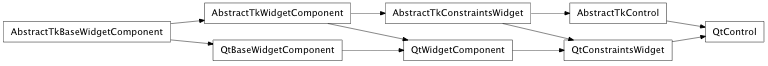
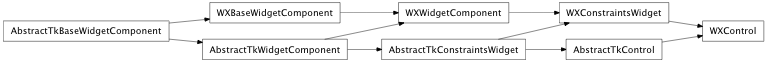

Bases: enaml.components.constraints_widget.ConstraintsWidget
The base class of all leaf widgets in Enaml.
A boolean which indicates whether an exception was raised through user interaction or setting a value trait on the Control.
The exception object that was raised to create the error state.
Overridden parent class trait
Return a ShellExceptionContext that will capture error state automatically.
Return a ShellNotificationContext that will set error state automatically, including TraitErrors in listeners.
alias of __NoInterface__

Bases: enaml.backends.qt.qt_constraints_widget.QtConstraintsWidget, enaml.components.control.AbstractTkControl
A Qt4 implementation of Control.

Bases: enaml.backends.wx.wx_constraints_widget.WXConstraintsWidget, enaml.components.control.AbstractTkControl